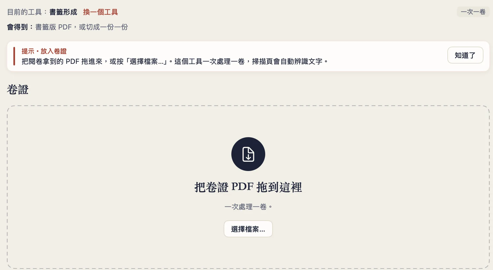
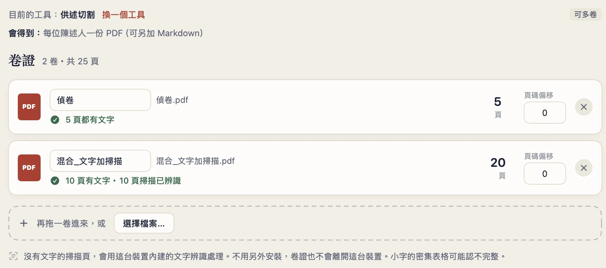
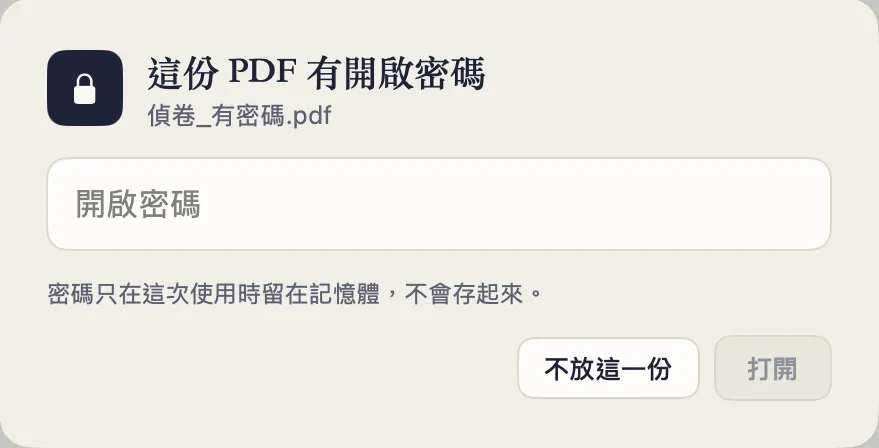
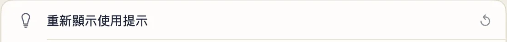

第一次使用審判工具箱：放入 PDF、三個步驟與輸出位置
審判工具箱有十三個工具，大部分的操作方式都一樣：放入檔案、確認與預覽、輸出。這篇先把共通的部分講清楚，之後看各工具的教學時，只要看那個工具不一樣的地方。
首頁：四組工具
打開 App 是首頁「今天要用哪個工具」。十三個工具依工作的時機分成四組，左邊的側邊欄也是同樣的分組。
- 判決：判決下載。這組會連到司法院的裁判書查詢網站。
- 讀卷：書籤形成、供述切割、全文搜尋、PDF 轉 Markdown、章節切割、可搜尋 PDF。閱卷回來先用這一組整理卷證。
- 遞狀與交付：證物冊、去識別化、頁碼與浮水印、密碼。要送出去之前用。
- 頁面：頁面整理、圖片與掃描。零碎的整理。
Mac 版首頁下方還有「交給 AI」的卡片，做完的工作會列在「最近的工作」（後面會說明）。側邊欄最下面的「全程在這台 Mac 處理」是提醒：卷證不會上傳到任何地方，找判決時只會連到司法院的公開查詢網站。
打開一個工具
點首頁的卡片或側邊欄的工具名稱，就會進到那個工具的第一步。Mac 也可以用鍵盤：⌘0 回首頁，⌘1 到 ⌘9 依序是判決下載、書籤形成、供述切割、全文搜尋、PDF 轉 Markdown、章節切割、可搜尋 PDF、證物冊、去識別化。
也可以先拿著 PDF 再選工具。在首頁把 PDF 拖進視窗，會跳出「要用哪個工具」，點一個工具，PDF 就放進那個工具裡。不想用了按「取消」。
在 Finder 用審判工具箱打開 PDF 也是一樣：已經在某個能收 PDF 的工具裡，就直接放進那個工具；不在工具裡，就先問要用哪個工具。判決下載不收 PDF，所以不會出現在這個清單裡。
放入 PDF
每個工具的第一步，上面一行寫著目前的工具和「會得到」什麼（例如書籤形成是「書籤版 PDF，或切成一份一份」），右邊的小標籤寫著這個工具一次能放幾份。下面是放檔案的地方，兩種放法：
- 把 PDF 從 Finder 拖到虛線框裡。
- 按「選擇檔案…」，從對話框選。

放進來的每一份 PDF 列成一列。讀卷的幾個工具，每一列有兩個可以改的欄位：
- 卷宗簡稱：預設是檔名，可以改成「偵卷」「院卷」這類短名稱。輸出的資料夾名稱會用它；供述切割也用它標示每份筆錄出自哪一卷。
- 頁碼偏移：卷面頁碼和 PDF 頁碼對不上時填。卷面頁碼＝PDF 頁碼＋偏移，例如 PDF 第 1 頁是卷面第 5 頁，就填 4。各工具用不用這兩欄，寫在各工具的教學裡。

放錯的那一份，按該列右邊的 ✕ 移除。要再加一份，把 PDF 拖到下面的「再拖一卷進來，或」那一格，或按旁邊的「選擇檔案…」。
書籤形成和章節切割一次處理一卷。放了兩卷以上時，會出現「一次處理一卷，請只留一卷」的提醒，按 ✕ 拿掉多的那一卷才能往下走。其他放 PDF 的工具都可以一次放好幾份。
掃描頁與有密碼的檔案
放進來的 PDF，App 會先檢查每一頁有沒有文字。全部有文字時顯示「5 頁都有文字」這樣的綠色字；有掃描頁時，會用這台裝置內建的文字辨識讀出文字，進行中顯示「N 頁是掃描，文字辨識中」，完成後顯示「N 頁有文字・N 頁掃描已辨識」。不用另外安裝軟體，卷證也不會離開這台裝置。
辨識還沒完成時，右上角的按鈕不能按，旁邊會寫「等文字辨識完成，還剩 N 頁」。掃描頁多的卷要等一下。
有開啟密碼的 PDF，放進來時會跳出「這份 PDF 有開啟密碼」。輸入密碼按「打開」就放進來；不想放這一份，按「不放這一份」。密碼不對時會寫「密碼不對，請再試一次。」

密碼只在這次使用時留在記憶體，不會存起來。輸出的檔案不會帶著原本的密碼。想替輸出的檔案加密碼，或存一份沒有密碼的版本，用「密碼」這個工具。
每個工具都是三個步驟
畫面最上方是工具名稱和步驟。讀卷的工具是「放入卷證 › 確認與預覽 › 輸出」，其他工具的名稱略有不同（例如去識別化是「放入 PDF › 確認要遮的項目 › 輸出文字」），順序都一樣。
- 右上角的按鈕往下一步，按鈕上的字會寫清楚下一步做什麼，例如「開始分析」「下一步：輸出」「開始輸出 2 個檔案」。按鈕不能按時，左邊會寫原因，例如「先放入卷證 PDF」。
- 左邊的返回鍵回到上一步。回去改了東西，再往下走一次就好，放好的檔案不會不見。
- 分析中可以按「停止」。分析失敗時會跳出「分析沒有完成」並寫出原因。
第二步是確認 App 做得對不對的地方：分出來的清單在左邊，點一列，右邊顯示那一段的頁面。分錯的在這裡改，改法各工具不同，請看各工具的教學。全文搜尋例外，沒有輸出這一步，放好卷就直接搜尋。
輸出前先看檔案清單
進到輸出這一步，左邊是輸出設定，右邊是「按下去會產生這 N 個檔案」的清單。改左邊的設定，清單會跟著變。清單上有「預覽」的檔案，可以先打開看內容，再決定要不要輸出。

清單下面寫著「原本的卷證 PDF 不會被改動。」輸出都是另存新檔。確認好了，按右上角的「開始輸出 N 個檔案」。檔案多時會顯示進度，中途可以按「停止」；已經產生的檔案會留在輸出資料夾裡。
輸出的檔案在哪裡
輸出設定最下面是「存到」。Mac 預設是「下載項目 › 審判工具箱」，按「選擇…」可以換一個資料夾，選過的資料夾下次打開還在；想換回來，按「改回預設位置」。
每次輸出會在裡面開一個新資料夾，不會蓋掉之前的結果。讀卷工具的資料夾名稱是第一卷的卷宗簡稱加上工具名稱，例如「偵卷 書籤形成」；同名的資料夾已經存在時，後面會加上日期與時間。
輸出完成後，右邊顯示「產生了 N 個檔案」和每個檔案的名稱，每一列有「打開」。

- 在 Finder 顯示：打開放這次輸出的資料夾。
- 交給 AI…（只有 Mac）：複製一段指示，貼到你用的 AI 工具，請它整理這次輸出的檔案。審判工具箱本身不會連到任何 AI。輸出的根資料夾裡會有一份「給 AI 的說明.md」，就是給這個用的。詳細在交給 AI 的教學。
- 右上角的按鈕這時變成「處理另一份」與「再輸出一次」。處理另一份清掉這次放的檔案，從第一步重來；再輸出一次用同樣的內容再輸出一次，例如改了左邊的設定之後。
回到首頁，下方的「最近的工作」會列出最近做完的工作（名稱、類型、結果、時間），按該列的「在 Finder 顯示」就能打開那次的資料夾。不想留紀錄，按「清除紀錄」；清除的是這份清單，輸出的檔案不會被刪除。
提示卡
第一次走到某一步時，畫面上會出現一張提示卡，用一兩句話說明這一步要做什麼。按「知道了」，或做了提示說的動作，這張就不會再出現。
想再看一次，到側邊欄最下面的「關於」，按「重新顯示使用提示」，每一張都會再出現一次。

在 iPhone・iPad 上
iPhone・iPad 版的工具和步驟跟 Mac 版相同，幾個地方不一樣：
- 在 iPhone 上，主要按鈕在畫面下方；Mac 與 iPad 在右上角。
- 確認與預覽的清單，點一列會整頁顯示那一段的頁面，看完回到清單。
- 輸出的檔案在「檔案」App 的「我的 iPhone › 審判工具箱」。
- 首頁最上面有「用相機掃描文件」，掃好的 PDF 可以接著用其他工具處理。
- 免費版會在畫面最下方顯示橫幅，按「開始輸出」前偶爾有一則讀秒廣告；在「關於」買斷一次就不再出現。
- 沒有「交給 AI」。
iPhone・iPad 版的畫面在iPhone・iPad 介紹頁。
做不到的事／要注意
- 文字辨識會出錯。掃描品質差的頁面、很小的字和密集的表格容易認錯或認不完整，直書也認不完整。App 分出來的清單請在第二步核對後再輸出。
- 輸出的 PDF 不會保留原檔的表單欄位和內嵌附件。
- 書籤形成和章節切割一次處理一卷，其他放 PDF 的工具可以一次放好幾份。
- 「最近的工作」只記在這台裝置上。Mac 版和 iPhone・iPad 版是兩個分開的 App，紀錄與購買都各自計算。
接下來可以從讀卷的第一個工具開始：替整卷加上書籤：書籤形成教學。每個工具的簡短步驟在使用說明。
常見問題
卷證會上傳嗎？
不會。卷證只在這台裝置上讀取和處理，文字辨識也是用裝置內建的功能。只有判決下載會連網，連到司法院的裁判書查詢網站。
輸出的檔案在哪裡？
Mac 預設在「下載項目」裡的審判工具箱資料夾，輸出前可以在「存到」按「選擇…」換位置。iPhone 在「檔案」App 的「我的 iPhone › 審判工具箱」。每次輸出都會開一個新資料夾。
「頁碼偏移」要填什麼？
卷面頁碼和 PDF 頁碼的差。例如 PDF 第 1 頁是卷面第 5 頁，就填 4。
原本的 PDF 會被改掉嗎？
不會。輸出都是另存新檔，每次輸出也都放在新的資料夾。